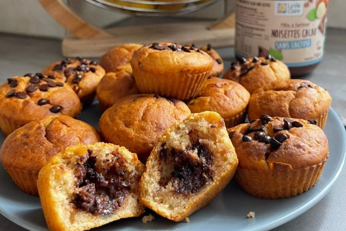

Accompagnement à la carte

Je te rends visite pendant environ 1h30 (et plus si nécessaire) sur
la thématique de ton choix
Plusieurs visites sont possibles selon tes besoins
Voici quelques exemples :
-
1 visite pendant la grossesse
Pour discuter de tes envies, tes besoins et obtenir des conseils
Je peux également t'aider à rédiger ton plan de naissance
On peut terminer la séance par une méditation guidée si tu le
souhaites
-
1 visite en post partum
Pour parler de ton accouchement, décharger, confier tes besoins et
trouver des solutions
- Aide pour l’allaitement
- Et bien d'autres selon tes demandes ...
Si tu aimerais vraiment te faire accompagner mais que l’argent est
un frein pour sauter le pas, n’hésite pas à me contacter : on peut
toujours trouver des solutions ensemble ...
💖
Bientôt
disponible
Accompagnement complet

-
4 visites pendant ta grossesse
-
Présence à ton accouchement
(à domicile ou à l’hôpital si le protocole le permet)
Je suis d’astreinte 24h/24 et 7j/7 de la 37e SA jusqu’à 1 semaine
après ton terme
-
3 visites en post partum
Pour discuter de tes ressentis, de tes besoins, t’aider dans ton
quotidien si tu en ressens le besoin
-
1 soin relaxation Rebozo
Balancement et resserage de bassin
A partir du 40ème jour post accouchement
-
Durée des visites : 1h à 1h30 (et plus si nécessaire)
Le prix comprend les visites, le temps d’astreinte, la présence à
l’accouchement quel que soit la durée et le soin Rebozo
Si tu aimerais vraiment te faire accompagner mais que l’argent est
un frein pour sauter le pas, n’hésite pas à me contacter : on peut
toujours trouver des solutions ensemble ...
💖
Préparation des repas pour le post partum

Je me rends à ton domicile avec tous les ingrédients et le matériel
nécessaires et tu n’as plus qu’à tout mettre au congélateur !
Cela te permettra de ne pas avoir à te poser la question « qu’est-ce
qu’on mange » et de courir partout pour préparer un repas alors que
tu es dans une période de ta vie qui ne t’appelle qu’au repos ...
Pendant environ 3 heures, nous pourrons alors parler de ta grossesse
pendant que je cuisine pour toi !
Cette offre comprend :
-
6 repas végétariens complets pour 2/3 personnes
-
2 préparations sucrées pour le goûter (ex : boules d’énergie,
banana bread, etc.)
J’utilise principalement des ingrédients issus de l’agriculture
biologique
Le prix comprend les courses , le coût de préparation, le temps de
préparation et la livraison
Si tu aimerais vraiment te faire accompagner mais que l’argent est
un frein pour sauter le pas, n’hésite pas à me contacter : on peut
toujours trouver des solutions ensemble ...
💖